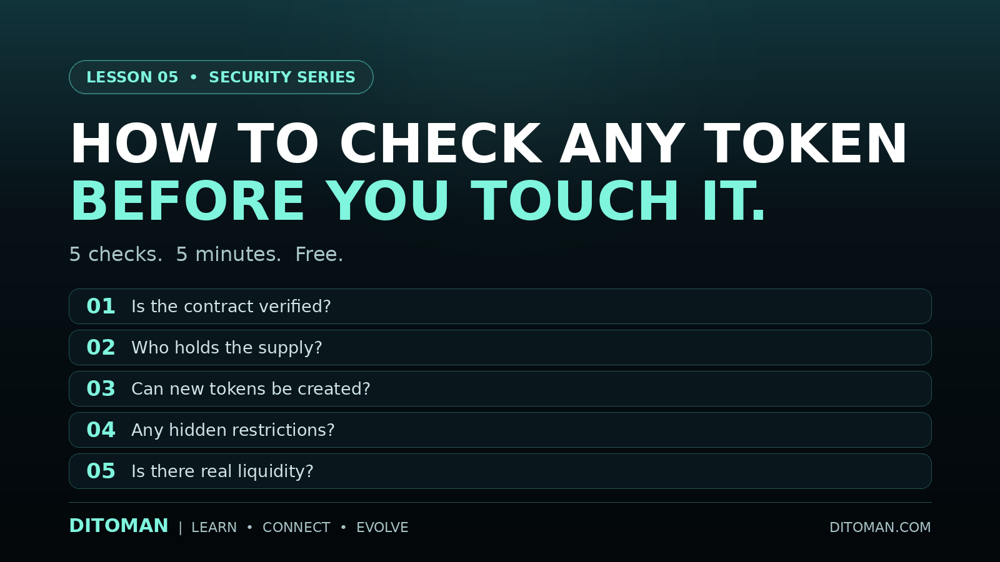

Cómo comprobar cualquier token antes de tocarlo
Cinco comprobaciones. Cinco minutos. Sin coste. La mayoría de quienes pierden dinero en cripto nunca las hizo.
پیش از دست زدن به هر توکن، اینها را بررسی کنید
پنج بررسی. پنج دقیقه. بدون هزینه. بیشتر کسانی که در کریپتو پول از دست میدهند، هیچوقت این بررسیها را انجام ندادهاند.
Contenido de la lección
Lee la lección en inglés o persa. Esta estructura está pensada para futuros sistemas de cuestionarios, puntuación, reputación y recompensas.
متن درس
درس را به فارسی یا انگلیسی بخوانید. این ساختار برای آزمونها، امتیازها، اعتبار و سیستمهای پاداش آینده طراحی شده است.
La mayoría de quienes pierden dinero con un token no eligieron el proyecto equivocado. Nunca comprobaron lo correcto.
Cada comprobación de abajo es gratuita, pública y lleva un minuto. No necesitas conocimientos técnicos. Solo saber dónde mirar.
01. ¿Está verificado el contrato?
Abre el token en un explorador de bloques como BscScan y ve a la pestaña Contract. Si el código fuente está verificado, verás código legible y una marca de confirmación. Si no lo está, solo ves código máquina, lo que significa que nadie fuera del equipo puede leer lo que hace realmente el token.
No verificado no significa automáticamente deshonesto. Pero significa que confías en una promesa en lugar de leer tú mismo las reglas.
02. ¿Quién tiene la oferta?
Abre la pestaña Holders. Mira cuánto del suministro total controlan las mayores billeteras.
Si unas pocas billeteras tienen casi todo, una sola decisión de una sola persona puede mover todo el mercado. La concentración no prueba mala intención, y muchos proyectos jóvenes empiezan así. Pero siempre es un riesgo, y mejor saberlo antes de actuar que después.
03. ¿Aún se pueden crear nuevos tokens?
En la sección Read Contract, busca una función llamada owner. Si devuelve una dirección de billetera normal, esa persona aún controla las funciones exclusivas del propietario, que pueden incluir crear nuevos tokens.
Si devuelve una dirección de solo ceros, se ha renunciado a la propiedad. Esos poderes han desaparecido para siempre y nadie puede recuperarlos, ni siquiera el equipo original.
Esto importa porque una oferta que puede crecer sin límite puede diluir a todos los que tienen el token.
04. ¿Hay restricciones ocultas?
Lee el código del contrato en busca de impuestos de transferencia, funciones de pausa o la capacidad de bloquear direcciones concretas. Algunos tokens están hechos para que comprar funcione con normalidad pero vender no.
Es una de las trampas más comunes, y se ve en el código antes de gastar nada.
05. ¿Hay liquidez real?
Un precio en una pantalla no es dinero. Solo se convierte en dinero cuando alguien está dispuesto a operar contra él.
Comprueba si existe un pool de liquidez real y qué profundidad tiene. Sin liquidez no hay salida, muestre el número que muestre.
El hábito que importa
Estas cinco comprobaciones no te darán la razón sobre qué proyectos triunfarán. Nada lo hace.
Lo que hacen es eliminar las formas más comunes y evitables de perder dinero: tokens que no se podían leer, oferta que no se veía, poderes que no se sabía que existían y salidas que nunca estuvieron ahí.
Primero comprueba. Después decide.
بیشتر کسانی که روی یک توکن ضرر میکنند، پروژه اشتباهی را انتخاب نکردهاند. آنها هرگز چیزهای درست را بررسی نکردهاند.
همه بررسیهای زیر رایگان، عمومی و حدود یک دقیقهای هستند. به دانش فنی نیاز ندارید. فقط باید بدانید کجا را نگاه کنید.
۰۱. آیا قرارداد تأیید شده است؟
توکن را در یک بلاک اکسپلورر مانند BscScan باز کنید و به بخش Contract بروید. اگر سورس کد تأیید شده باشد، کد قابل خواندن و یک علامت تأیید میبینید. اگر تأیید نشده باشد، فقط کد ماشین دیده میشود، یعنی هیچکس بیرون از تیم نمیتواند بفهمد این توکن واقعاً چه کاری انجام میدهد.
تأیید نشدن لزوماً به معنای نادرستی نیست. اما یعنی شما به جای خواندن قوانین، به یک وعده اعتماد میکنید.
۰۲. چه کسی عرضه را در اختیار دارد؟
بخش Holders را باز کنید و ببینید کیفپولهای اصلی چه مقدار از کل عرضه را کنترل میکنند.
اگر تعداد کمی کیف پول تقریباً همه چیز را در اختیار داشته باشند، یک تصمیم از یک نفر میتواند کل بازار را جابهجا کند. تمرکز عرضه بهخودیخود نشانه نیت بد نیست و بسیاری از پروژههای تازه اینگونه شروع میشوند. اما همیشه یک ریسک است، و بهتر است پیش از اقدام از آن باخبر باشید، نه بعد از آن.
۰۳. آیا هنوز میتوان توکن جدید ساخت؟
در بخش Read Contract دنبال تابعی به نام owner بگردید. اگر یک آدرس معمولی برگرداند، آن شخص هنوز کنترل توابع مخصوص مالک را دارد که میتواند شامل ساخت توکن جدید باشد.
اگر آدرسی که تماماً از صفر تشکیل شده برگرداند، مالکیت سلب شده است. آن اختیارات برای همیشه از بین رفتهاند و هیچکس، حتی تیم اولیه، نمیتواند آنها را بازگرداند.
این موضوع مهم است، چون عرضهای که بدون محدودیت رشد کند، ارزش دارایی همه دارندگان را کاهش میدهد.
۰۴. آیا محدودیت پنهانی وجود دارد؟
کد قرارداد را از نظر مالیات انتقال، تابع توقف، یا امکان مسدود کردن آدرسهای مشخص بررسی کنید. برخی توکنها طوری ساخته شدهاند که خرید بهدرستی کار میکند اما فروش انجام نمیشود.
این یکی از رایجترین تلههاست و پیش از آنکه پولی خرج کنید، در کد قابل مشاهده است.
۰۵. آیا نقدشوندگی واقعی وجود دارد؟
قیمتی که روی صفحه میبینید پول نیست. وقتی پول میشود که کسی حاضر باشد در مقابل آن معامله کند.
بررسی کنید که آیا استخر نقدشوندگی واقعی وجود دارد و چه عمقی دارد. بدون نقدشوندگی، راه خروجی وجود ندارد، هر عددی هم که نمایش داده شود.
عادتی که اهمیت دارد
این پنج بررسی باعث نمیشود در تشخیص پروژههای موفق درست عمل کنید. هیچ چیز چنین تضمینی نمیدهد.
کاری که انجام میدهند این است: رایجترین و قابلپیشگیریترین راههای از دست دادن پول را حذف میکنند. توکنهایی که نمیشد خواند، عرضهای که دیده نمیشد، اختیاراتی که از آنها خبر نداشتید، و راه خروجی که اصلاً وجود نداشت.
اول بررسی کنید. بعد تصمیم بگیرید.
Ahora aplícalo a nosotros
Una lista de comprobación solo es honesta si se aplica a quien la publica. Aquí está TMN medido con las mismas cinco comprobaciones, incluidas las que no superamos.
TMN se desplegó en 2022 y nunca se distribuyó ni promocionó, por eso la oferta sigue concentrada. Lo decimos abiertamente en lugar de dejar que se descubra, porque un proyecto que pide a la gente que compruebe las cosas debe ser comprobable él mismo.
حالا روی خودمان امتحان کنیم
یک چکلیست فقط وقتی صادقانه است که برای منتشرکنندهاش هم به کار برود. اینجا TMN را با همین پنج بررسی میسنجیم، از جمله مواردی که در آنها قبول نمیشویم.
TMN در سال ۲۰۲۲ ساخته شد و هیچوقت توزیع یا تبلیغ نشد. به همین دلیل عرضه هنوز متمرکز است. این را آشکارا میگوییم و منتظر نمیمانیم کسی خودش آن را کشف کند، چون پروژهای که از مردم میخواهد همه چیز را بررسی کنند، خودش هم باید قابل بررسی باشد.
همین پنج بررسی را روی TMN انجام دهید. نقاط قوت و نقاط ضعف ما هر دو در این جدول آمده است. عرضه همچنان متمرکز است و ما این را پنهان نمیکنیم.
Conceptos clave
- Verificación del contrato
- Explorador de bloques
- Distribución entre tenedores
- Concentración de la oferta
- Renuncia a la propiedad
- Acuñación
- Impuesto de transferencia
- Función de lista negra
- Pool de liquidez
Objetivos de aprendizaje
- Saber dónde encontrar el contrato de un token y leer su estado.
- Entender por qué la concentración de la oferta es un riesgo.
- Comprueba si aún se pueden crear nuevos tokens.
- Reconocer restricciones ocultas escritas en un contrato.
- Entender por qué la liquidez determina si existe una salida.
مفاهیم کلیدی
- تأیید قرارداد
- بلاک اکسپلورر
- پراکندگی دارندگان
- تمرکز عرضه
- واگذاری مالکیت
- ساخت توکن جدید (مینت)
- مالیات انتقال
- تابع لیست سیاه
- استخر نقدشوندگی
اهداف یادگیری
- بدانیم قرارداد یک توکن را کجا پیدا کنیم و وضعیتش را چطور بخوانیم.
- بفهمیم چرا تمرکز عرضه یک ریسک است.
- بررسی کنیم که آیا هنوز میشود توکن جدید ساخت.
- محدودیتهای پنهانی را که در قرارداد نوشته شدهاند تشخیص دهیم.
- بفهمیم چرا نقدشوندگی تعیین میکند راه خروجی وجود دارد یا نه.
Banco de preguntas futuro
Estas preguntas están preparadas para el futuro sistema de cuestionarios y participación de Ditoman. Más adelante podrían sustentar puntuaciones de aprendizaje, capas de reputación y una posible elegibilidad para recompensas en TMN.
Pregunta 1
¿Qué significa un contrato no verificado?
A. El token es sin duda una estafa
B. El público no puede leer ni comprobar el código fuente
C. El token no se puede negociar
D. El token no tiene límite de oferta
Respuesta correcta: B
Pregunta 2
Si la función owner devuelve una dirección de solo ceros, ¿qué significa?
A. El contrato está roto
B. El token se ha borrado
C. Se ha renunciado a la propiedad y las funciones exclusivas del propietario ya no pueden usarse
D. Ahora cualquiera puede crear nuevos tokens
Respuesta correcta: C
Pregunta 3
¿Cuál de estas cosas se puede descubrir leyendo el contrato de un token?
A. Impuestos de transferencia
B. Funciones de lista negra o bloqueo de direcciones
C. Si se pueden crear nuevos tokens
D. El precio futuro del token
Respuestas correctas: A, B, C
Pregunta 4
Verdadero o falso: un precio mostrado en una web de seguimiento demuestra que puedes vender el token.
Respuesta correcta: Falso. Sin liquidez no hay salida.
Pregunta 5
¿Por qué importa la concentración de la oferta?
A. Siempre significa que el proyecto es deshonesto
B. Un pequeño número de tenedores puede mover todo el mercado con una decisión
C. Hace que el contrato no se pueda verificar
D. Impide que el token cotice en ningún sitio
Respuesta correcta: B
بانک سؤالات آزمون آینده
این سؤالها برای سیستم آزمون و مشارکت آینده دیتومان آماده شدهاند. ممکن است بعدها پایه امتیاز یادگیری، لایههای اعتبار و احتمالاً شرایط دریافت پاداش TMN باشند.
سؤال ۱
قرارداد تأییدنشده یعنی چه؟
الف. توکن قطعاً کلاهبرداری است
ب. سورس کد برای عموم قابل خواندن و بررسی نیست
ج. توکن قابل معامله نیست
د. عرضه توکن سقف ندارد
پاسخ درست: ب
سؤال ۲
اگر تابع owner آدرسی برگرداند که تماماً از صفر تشکیل شده، یعنی چه؟
الف. قرارداد خراب است
ب. توکن حذف شده است
ج. مالکیت واگذار شده و دیگر نمیشود از توابع مخصوص مالک استفاده کرد
د. حالا هر کسی میتواند توکن جدید بسازد
پاسخ درست: ج
سؤال ۳
کدام موارد را میشود با خواندن قرارداد یک توکن فهمید؟
الف. مالیات انتقال
ب. توابع لیست سیاه یا مسدود کردن آدرس
ج. اینکه آیا هنوز میشود توکن جدید ساخت
د. قیمت آینده توکن
پاسخهای درست: الف، ب، ج
سؤال ۴
درست یا نادرست: قیمتی که در یک سایت ردیابی قیمت نمایش داده میشود ثابت میکند که میتوانید توکن را بفروشید.
پاسخ درست: نادرست. بدون نقدشوندگی، راه خروجی وجود ندارد.
سؤال ۵
چرا تمرکز عرضه اهمیت دارد؟
الف. همیشه یعنی پروژه صادق نیست
ب. تعداد کمی دارنده میتوانند با یک تصمیم کل بازار را جابهجا کنند
ج. قرارداد را غیرقابل تأیید میکند
د. مانع لیست شدن توکن در هر جایی میشود
پاسخ درست: ب
Resumen en Instagram
Esta lección se presentó primero en el Instagram de Ditoman como parte de la Serie Educación. La versión de Instagram ofrece un breve resumen visual, y esta página ofrece la versión completa.
خلاصه اینستاگرام
خلاصه تصویری این درس ابتدا در اینستاگرام دیتومان منتشر شد. نسخه اینستاگرام یک معرفی کوتاه و تصویری است، اما این صفحه نسخه کامل آموزشی آن است.